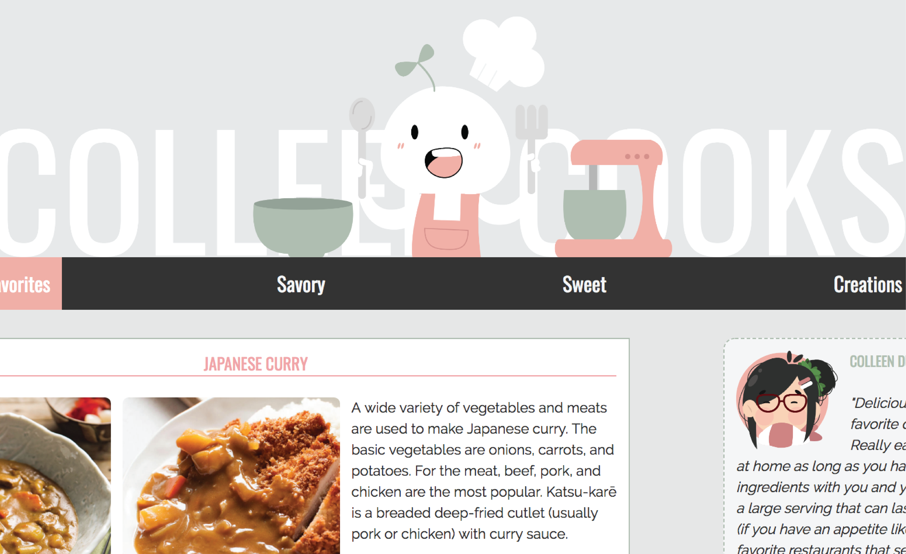
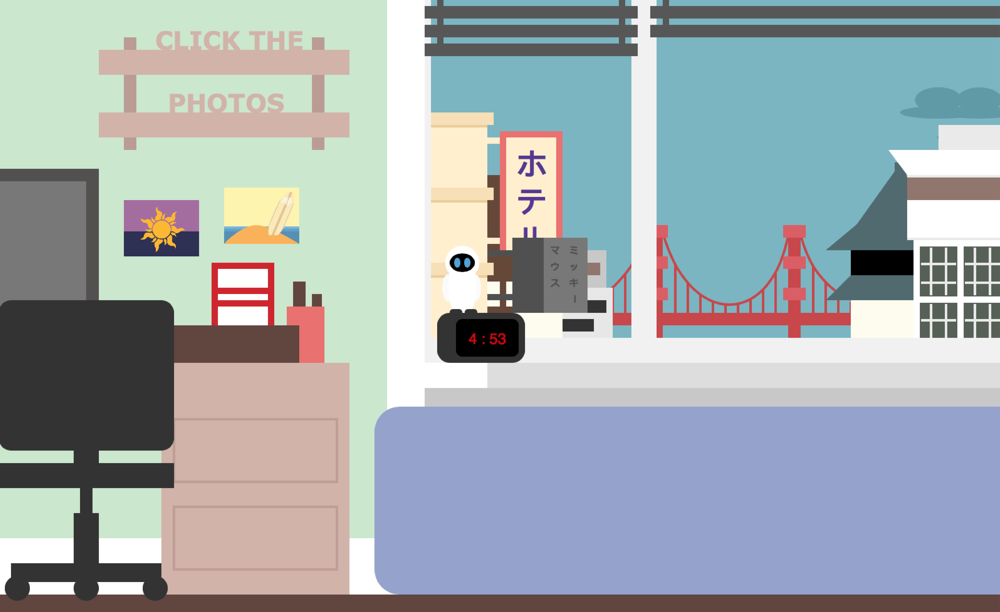

Recipe Guide Website
Design, HTML Bootstrap
Incomplete. A simple cooking website that I created as a reference for recipes that I might want to cook in the future, or could only dream of being able to cook (with my mediocre eggs and spam skills). This website was made to test how to use bootstrap and media queries to make a mobile-friendly website. Only the Favorites and Savory tab have been coded.

Design, P5JS, Javascript
Using code, I drew Hiro's Room and Sanfranstokyo. There are several things happening in this photo: 1) The sky changes color throughout the day to match the sky color with the time and clouds move throughout the sky, 2) stars appear after a certain time at night, 3) a special star appears at a certain time (second star to the right from peter pan at 11pm), 4) EVE from WALL-E clock changes color at 8:30 am to indicate that it's time for school for Hiro, 5) lights in the building start to blick at night, 6) you can click on the drawings near the computer to see them on the computer screen.
Design, P5JS, Javascript
Picture interacts with time. The snow falls in correspondence to the seconds. The moon changes in correspondence to the hours. The character climbs the mountain in correspondence to minutes. when it reaches 59 minutes, the character reaches the top of the mountain and has a white flag with them.
Source Code